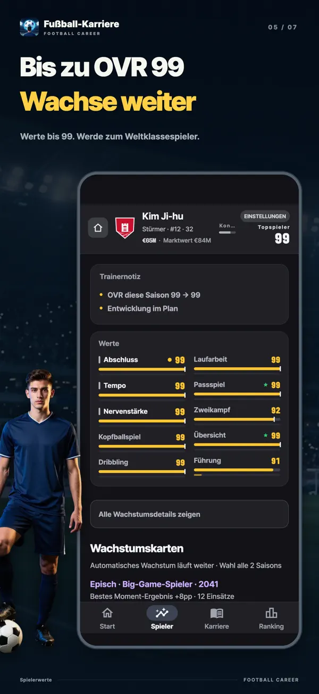
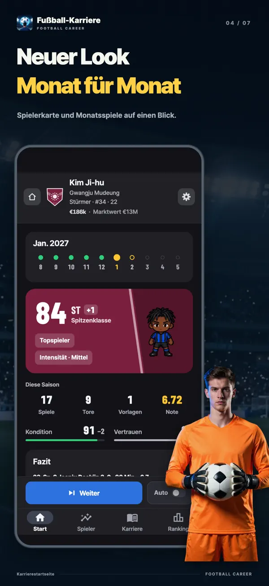
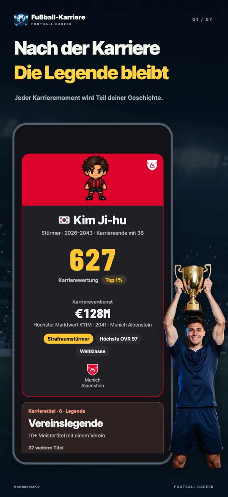
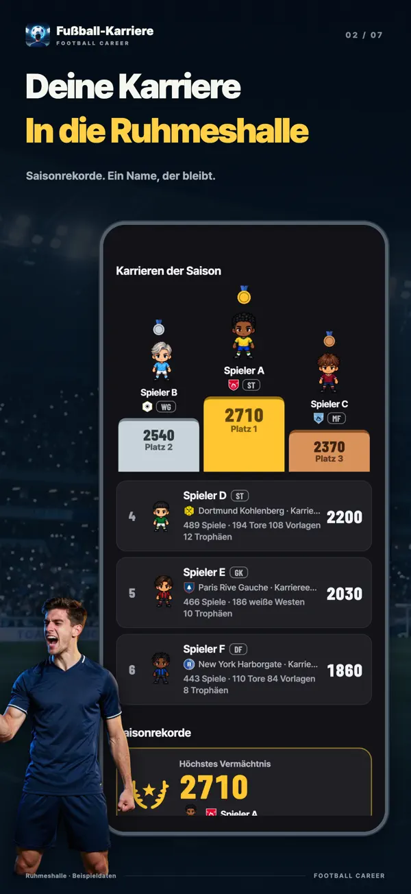
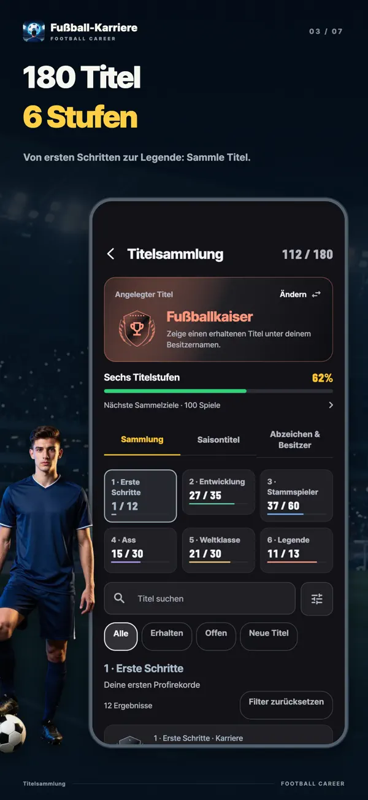
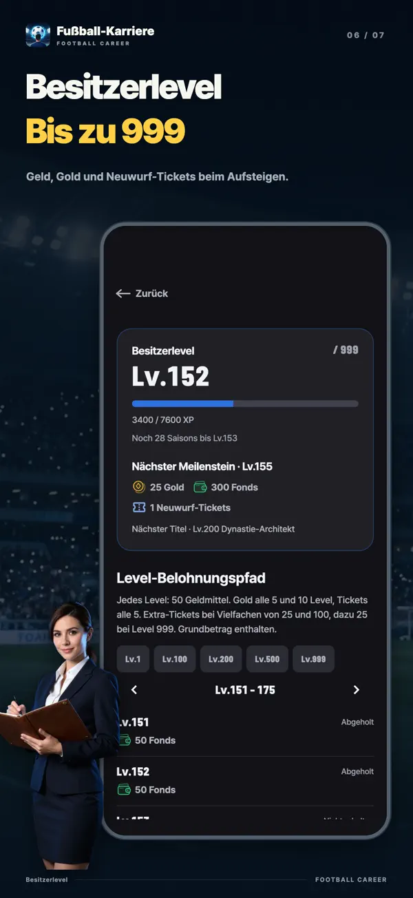
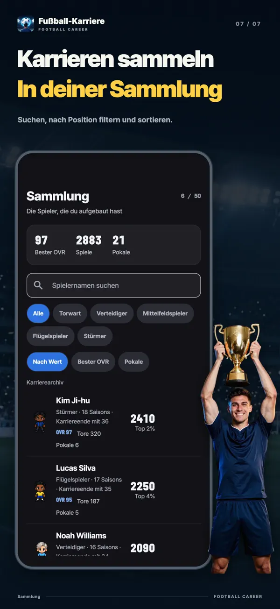

- YT Lab
- Fußball Karriere Simulator

Fußball Karriere Simulator Eine Karte kann deine Karriere verändern
Alle zwei Saisons wählst du eine von drei Wachstumskarten derselben Seltenheit. Werte sofort erhöhen, verborgene Grenzen verschieben oder eine Bedingung für eine große Belohnung erfüllen? In dieser Fußball-Karrieresimulation begleitest du einen Spieler vom Nachwuchs mit siebzehn bis zum Karriereende.
Wähle dein nächstes Wachstum
27 Jahre · Stürmer · OVR 96Du kannst jede Karte einmal neu ziehen. Die Seltenheit bleibt gleich.
Hier stecken die echten Karten und Berechnungen der App dahinter: Ein 27-jähriger Star-Stürmer bekommt die seltenste Runde, Legend. Auch beim Neuziehen und bei den nächsten Karten gelten die Kartenauswahl und Chancen der App. Jede Demo beginnt wieder mit demselben Spieler.


Kostenloser Download mit In-App-Käufen. Für iPhone und iPad ab iOS 15 sowie Android ab 7.0.
Alle zwei Saisons. Drei Karten. Deine Wahl.
Deine Werte wachsen automatisch, während du spielst. Wachstumskarten geben dir eine zusätzliche Wahl. Zum Start und danach alle zwei Saisons wählst du eine von drei Karten derselben Seltenheit aus verschiedenen Familien. Je höher die Seltenheit, desto stärker die Wirkung. Deine erste Karte ist garantiert Episch.
Sofort stärker werden
Die Werte steigen sofort nach der Wahl. Fokus zahlt sich aus gibt einem Kernwert +6 und seiner Obergrenze +3. Lücken füllen erhöht deinen niedrigsten Kern- und Nebenwert um jeweils 4.
Neue Grenzen erreichen
Jeder Wert hat eine verborgene Obergrenze. Dort endet das automatische Wachstum. Ein wenig Potenzial, Offenes Potenzial und Potenzialsprung verschieben diese Grenze. Mit Karten lässt sie sich auf bis zu 95 erhöhen.
Belohnungen auf dem Platz verdienen
Torjäger bringt alle 5 Tore Abschluss +1. Star des Spiels gibt für je 2 MOM-Auszeichnungen einen Wert +2. Bereit zum Aufstieg belohnt 30 Einsätze mit einem Kernwert +8. Dafür musst du auf dem Platz liefern.
Stärken gewinnen, Abstriche machen
Explosiver Sprint tauscht Kopfballspiel −3 gegen Tempo +8. Teuflisches Talent gibt einer Kern-Obergrenze +12 und dem Wert +10, kostet aber einen Nebenwert −3. Jeder Vorteil hat seinen Preis.
Mehr Zeit auf dem Platz
Zweiter Höhepunkt halbiert den altersbedingten Abbau für drei Saisons und verlängert die Karriere um 2 Jahre. Letzte Flamme erhöht drei Kernwerte um je +6, legt aber das Karriereende auf das Ende dieser Saison fest.
Kostenlos neu ziehen
Eine Karte gefällt dir nicht? Zieh sie einzeln neu. Die Seltenheit bleibt gleich, und die neue Karte gehört zu einer anderen Familie als die übrigen beiden.
Von der Bank bis zum Ballon d’Or
Du startest nicht als Stammkraft in der ersten Liga. Dein Weg führt durch Nachwuchs und Zweite Mannschaft, dann von der Bank der Ersten Mannschaft auf den Platz. Am Ende winkt die Auszeichnung Weltfußballer des Jahres für den besten Spieler der Saison weltweit. Deine Karten und Saisonleistungen entscheiden, wie weit du kommst.
- 17Jahre alt
Nachwuchs
Du startest mit siebzehn im Nachwuchs. Mit dem Nachwuchs-Startpaket kannst du schon mit fünfzehn beginnen.
- 19spätestens in diesem Alter
Zweite Mannschaft
Sobald du fast das Niveau der Ersten Mannschaft erreichst oder neunzehn wirst, geht es in die Zweite Mannschaft. Über Beförderungen wird am Saisonende entschieden.
- 16–21Debüt je nach Liga
Von der Bank zum Stammplatz
Das Debütalter hängt von der Liga ab. Erfüllst du die Anforderungen an Alter, Fähigkeiten und Saisonnote, schaffst du es in die Erste Mannschaft. Das Vertrauen des Trainers bestimmt deine Einsatzzeit.
- Sommernach Saisonende
Transfers und Vertragsverlängerungen
Bitte um einen Transfer oder wähle ein Angebot. Verhandle dann mit deinem Berater über Gehalt und Klauseln wie Stammplatzgarantie oder Ausstiegsklausel.
- 18+in der Ersten Mannschaft
Nationalelf
Spieler der Ersten Mannschaft ab achtzehn können in die Nationalelf berufen werden. Weltturnier und Kontinentalturniere wechseln sich alle zwei Jahre ab.
- 36–41je nach Position
Das Karriereende – und was bleibt
Normalerweise spielen Flügelspieler bis 36 und Torwarte bis 41. Karten und Ereignisse können die Karriere verlängern. Du kannst auch selbst früher aufhören.
Spiel einen Monat. Sieh, wie du gewachsen bist.
Eine Saison dauert zehn Monate, von August bis Mai, und umfasst 38 Spiele. Einsätze, Tore, Vorlagen, Weiße Westen, MOM und Noten bestimmen dein monatliches Wachstum. Du siehst genau, welcher Wert wie stark gestiegen ist. Spiele Monat für Monat oder lass die Saison automatisch laufen.
Monatliches WachstumDribbling 57 → 58 +1
Ein starker Monat kann dir Spieler des Monats, Elf des Monats oder als Torwart Parade des Monats einbringen. Es zählen deine Leistungen, ohne versteckte Auslosung. Am Saisonende warten Torschützenkönig, Elf der Saison, Spieler des Jahres und sogar Weltfußballer des Jahres.
Einblicke ins Spiel







Ein anderes Fußballspiel
Die Karriere eines einzelnen Spielers
Es gibt weder Kaderplanung noch Taktiktafel oder Transferbudget. Der Trainer teilt deine Einsatzzeit ein. Wechselt er, kann auch ein anderer Spielertyp gefragt sein.
Du siehst die Chancen vor deiner Wahl
In Situationen während der Saison siehst du vor jeder Entscheidung die Chancen auf drei Ergebnisse als Balken und Prozentwerte. Du kannst auch nachsehen, wie deine Werte, das Vertrauen des Trainers, deine Kondition und Wachstumskarten diese Chancen beeinflusst haben.
Jede Liga bietet eine andere Karriere
Von England, Spanien, Deutschland, Italien und Frankreich bis Korea, Japan und Südamerika. Debütalter, Gehälter und Ausländerquoten unterscheiden sich je nach Liga. Alle Ligen, Vereine, Spieler und Trainer sind erfunden.
Deine Rekorde bleiben
Deine Gesamtstatistik bleibt erhalten, zusammen mit einer Bewertung auf sechs Achsen: Qualität, Ertrag, Umfang, Auszeichnungen, Titel und Bühne. Du siehst, zu welchem Spitzenprozentsatz du im Vergleich mit 20.000 nach den Spielregeln simulierten Karrieren gehörst. Abgeschlossene Karrieren erscheinen in Wochen-, Monats- und Gesamtranglisten sowie in der saisonalen Ruhmeshalle.
Häufige Fragen
- Ist das Spiel kostenlos?
- Du kannst das Spiel kostenlos herunterladen und bis zum Karriereende spielen. Wachstumskarten und das Neuziehen sind ebenfalls kostenlos. Optional kannst du „Werbung entfernen“, das Positionspaket, das Nachwuchs-Startpaket, das Unterstützer-Paket, Gold und Neuwurf-Tickets kaufen. Bei den Startwerten gelten für kostenlose Würfe, Werbung und Tickets dieselben Chancen.
- Kann ich offline spielen?
- Deine Karriere läuft und speichert auf deinem Gerät. Du kannst also offline spielen. Für Ranglisten, Käufe, das Ausgeben von Gold und Gerätewechsel brauchst du Internet.
- Gibt es das Spiel für PC oder Browser?
- Das Spiel ist eine App für iPhone, iPad und Android. Eine Browserversion gibt es nicht. Auf dieser Seite kannst du die Wachstumskarten ausprobieren.
- Welche Positionen kann ich spielen?
- Torwart, Verteidiger, Mittelfeldspieler, Flügelspieler und Stürmer. Torwart und Stürmer sind kostenlos; das Positionspaket schaltet die anderen drei frei. Jede Position bietet sieben Spielstile, insgesamt 35. Alle sind kostenlos.
- Wie viele Karrieren kann ich gleichzeitig spielen?
- Drei Karriereplätze lassen dich drei Spieler gleichzeitig entwickeln. Deine Nationalität bestimmt die erste Liga und deine Nationalelf.
- Gibt es echte Spieler oder Vereine?
- Nein. Alle Ligen, Vereine, Spieler und Trainer im Spiel sind erfunden.
- Wird mein Name in der Rangliste angezeigt?
- Abgeschlossene Karrieren erscheinen in der Rangliste. Du kannst die Teilnahme jederzeit ausschalten. Selbst geänderte Namen werden nur mit deiner Zustimmung veröffentlicht.